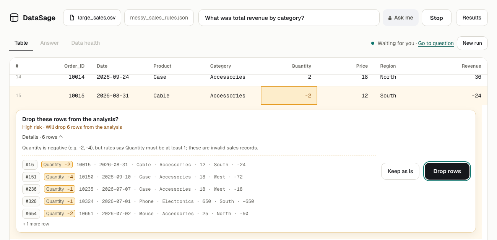
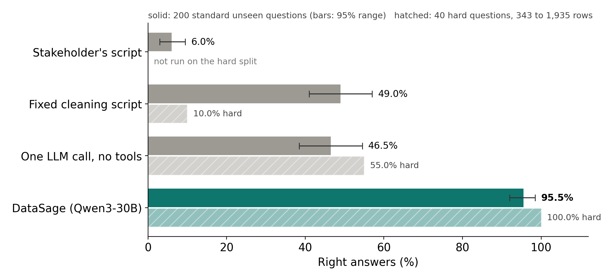
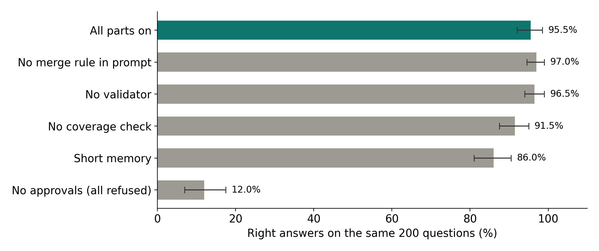

Problem
- People ask simple questions (“total revenue by category?”) of messy CSV and Excel files, where duplicates, misspelled labels, bad dates and impossible values quietly change the answer.
- A fixed cleaning script misses what it was not written for. A single LLM call edits data it should leave alone and leaves no record of what it changed.
- Our stakeholder asked for: correct answers, no damaged data, every change logged, and a question before any risky change.
DataSage: one planner, many tools
7 checks, 10 fixes, analyze
approves or rejects
CSV or Excel, optional rules file
picks the next check or fix
code sets the risk
new version, roll back on error
runs checks still missing
answer with caveats, change log, cleaned.csv, replay.py
Figure 1: The DataSage loop. Only the planner (blue) uses a language model; orange marks approval decisions. Steps 2 to 4 repeat, one fix per step, until the columns the question uses are clean.
- Tools, not free-form code: the model sees a profile and sample rows and acts only through tools in a reason-and-act loop [1]; Python (pandas [2]) does every calculation. A validator rolls back any fix whose rows or totals don't reconcile.
- Code decides what is risky, and what is still unchecked: risky fixes wait for the user (a rejected fix becomes a caveat), and a coverage check runs any check the rules require before answering.
Example: the stakeholder's sales file
Question: What was total revenue by category? Rules: Category is Electronics or Accessories; Quantity ≥ 1; dates are YYYY-MM-DD.
| Order | Date | Category | Qty | Region | Revenue |
|---|---|---|---|---|---|
| 1001 | 2026-08-01 | Electronics | 2 | West | 1800 |
| 1002 | 2026-08-02 | electronics | 5 | East | 125 |
| 1003 | 2026-08-03 | Accessories | 3 | West | 150 |
| 1004 | 2026-08-04 | Accessories | 2 | South | 600 |
| 1004 | 2026-08-04 | Accessories | 2 | South | 600 |
| 1005 | not-a-date | Electronics | 4 | North | 320 |
| 1006 | 2026-08-06 | Electronics | −1 | East | −60 |
| 1007 | 2026-08-07 | accessories | 2 | blank | 80 |
Table 1: The input file (8 rows). Shaded cells break a rule; order 1004 appears twice.

Figure 2: The browser app on a 1,208-row version: a risky fix waits under the row it affects, with the exact rows as evidence. Ask me or Auto mode; every output (cleaned table, report, replay script, step log) can be viewed and downloaded.
Benchmark
- 200 unseen questions on generated sales tables and Palmer Penguins [3] (five seeds, 40 each; 40 more were used while building), plus a hard split of 40 questions on tables of 343 to 1,935 rows with many problems at once.
- Answers are scored against the clean table; an oracle that knows the planted errors answers approvals. The final system was run 4 times.
- B0 the stakeholder's rule-based script [4] · B1 a fixed cleaning script · B2 a single LLM call with no tools.
- Planner: Qwen3-30B-A3B [5] on ASU Research Computing; 41 models on the same API were fully run as the planner.
Results

Figure 3: Right answers by approach: 200 standard unseen questions (solid, with 95% cluster-bootstrap ranges over tables [6]) and 40 hard questions (hatched; DataSage with the grouping fix).
| System | 200 standard (%) | 40 hard (%) | Damaged cells |
|---|---|---|---|
| B0 stakeholder script | 6.0 | not run | 0 |
| B1 fixed script | 49.0 | 10.0 | 0 |
| B2 single LLM call | 46.5 | 55.0 | 119 + 637 |
| DataSage, 30B (final) | 95.5 (92.0 to 98.5) | 100* | 0 |
| DataSage, 235B | n/a | 97.5 | 0 |
Table 2: Damaged cells are valid cells a system changed (standard + hard). Over 4 runs the final system scored 94.0% to 96.0%; median about 16 s per question. *With the grouping fix; 90.0 before.

Figure 4: What each part is worth: one part turned off, same 200 questions.
What we learned
- Approvals and full history carry the system: refusing every risky fix drops accuracy to 12%, a short memory summary to 86%. The validator and the prompt's merge rule showed no measurable effect.
- It holds on bigger, messier tables: 100% on the hard split (80 of 80, two seeds; 90% before we stopped analyze grouping by a column it also filters on), zero damaged cells.
- The design matters more than the model: we swapped in 41 models as the planner. With DataSage around it, a model answers a median 20 points more than in one call; the 30B default ranks 4th (93.8%) and is among the fastest. The weakest models fail on tool-call format, never by damaging data.
- Limitation: 36 of 39 remaining misses are rows breaking a rule in a column the question does not use (60.9% right on those questions, 99.6% on the rest). Checking only the question's columns was the stakeholder's choice; checking all columns is the next step.
References
[1] S. Yao, J. Zhao, D. Yu, N. Du, I. Shafran, K. Narasimhan, Y. Cao. ReAct: Synergizing reasoning and acting in language models. ICLR, 2023.
[2] W. McKinney. Data structures for statistical computing in Python. Proc. 9th Python in Science Conf. (SciPy), 2010.
[3] A. M. Horst, A. P. Hill, K. B. Gorman. palmerpenguins: Palmer Archipelago (Antarctica) penguin data. R package, 2020. doi:10.5281/zenodo.3960218.
[4] V. Buddani. DataSage: rule-based data cleaning baseline. GitHub, github.com/VB914/DataSage, 2026.
[5] A. Yang et al. (Qwen Team). Qwen3 technical report. arXiv:2505.09388, 2025.
[6] B. Efron, R. J. Tibshirani. An Introduction to the Bootstrap. Chapman & Hall, 1993.
Acknowledgements. We thank our stakeholder Vyshanth Buddani for his reviews and test file, and ASU Research Computing for model access.